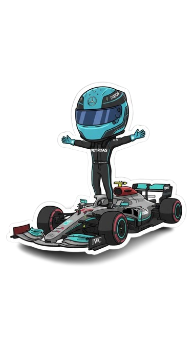
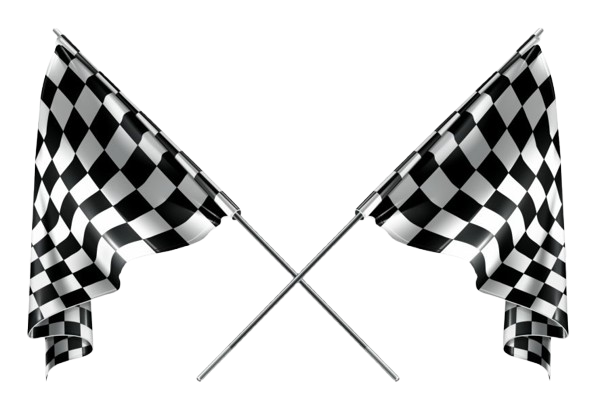

Explore
Discover new tools, ideas, and technologies.
AUTOMATION · ROBOTICS · ARTIFICIAL INTELLIGENCE
Hey, I'm Riya Ubale ! I'm an Automation and Robotics Engineering student passionate about technology, AI, robotics, and data analytics. I love learning new technologies, building projects, and discovering how things work. Apart from my technical interests, I'm a huge Fan of Formula 1.
Always learning. Always building. Always exploring.
A LITTLE MORE ABOUT MY WORLD
From the precision of robotics to the strategy behind every race, I'm fascinated by how engineering turns ambitious ideas into reality.

01 — GET TO KNOW ME
Curious about technology. Passionate about learning. Excited to build.
I'm a third-year BE Automation and Robotics Engineering student with a strong interest in artificial intelligence, robotics, engineering simulations, and data analytics.
I enjoy exploring different technologies and applying what I learn through practical projects. From working with IBM Cloud and Power BI to exploring ANSYS Workbench and MATLAB, I'm continuously developing my technical skills.
And outside my technical interests? I'm a huge Formula 1 fan! I love the speed, strategy, competition, and engineering behind the sport.
My goal is to gain practical experience, keep improving my skills, and grow into an engineer who can turn ideas into useful real-world solutions.
Discover new tools, ideas, and technologies.
Apply knowledge through projects and prototypes.
Learn from challenges and improve continuously.
02 — MY TECHNICAL TOOLKIT
A combination of engineering tools, programming technologies, AI platforms, and data analytics.
Exploring engineering behaviour through modelling, simulation, and analysis.
Exploring cloud platforms and developing AI-powered applications and agents.
Developing programming skills and learning to create structured, responsive websites.
Analysing information and presenting insights through data visualisation.
03 — PROJECT GARAGE
A selection of projects spanning robotics, AI, data analytics, and technology.

Currently working on the physical development of a robotic arm, exploring its mechanical components, assembly, and movement.
An interactive analysis of India's energy trade data from 1970 to 2023, using visualisations to explore historical trends.
An AI-powered startup blueprint generator designed to help users structure business ideas into organised plans.
A shared-equipment booking concept designed to explore easier equipment discovery and reservation.
A hackathon project exploring how AI can help identify potentially fraudulent messages and online opportunities.
04 — AI AGENTS & EXPERIMENTS
AI agent experiments involving instructions, structured knowledge, and personalised assistance.
An AI nutrition assistant designed to provide guidance based on user goals and dietary preferences.
An AI wellness agent configured with behavioural instructions and response guidelines for personalised assistance.
A Thai recipe assistant exploring recipe recommendations, structured knowledge, and step-by-step guidance.
05 — CERTIFICATIONS & LEARNING
Selected credentials from my journey across AI, programming, cloud, and analytics.
Certified AI Foundations Associate
ISSUED JANUARY 2026Microsoft Internship
MARCH 2026Six-week online internship with BeeSkilled
MAY 2026Cognitive Class
MARCH 2026IBM
JUNE 2026Certificate of Participation · Hack2skill
JULY 2026Visit my LinkedIn profile to explore more professional updates and learning experiences.
06 — LET'S CONNECT
Interested in technology, robotics, AI, data analytics, or collaborative projects? Let's connect, exchange ideas, and learn together.